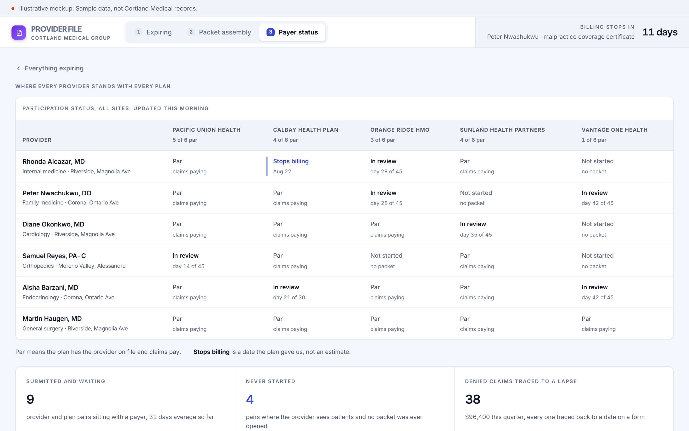
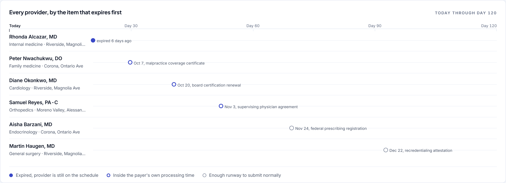
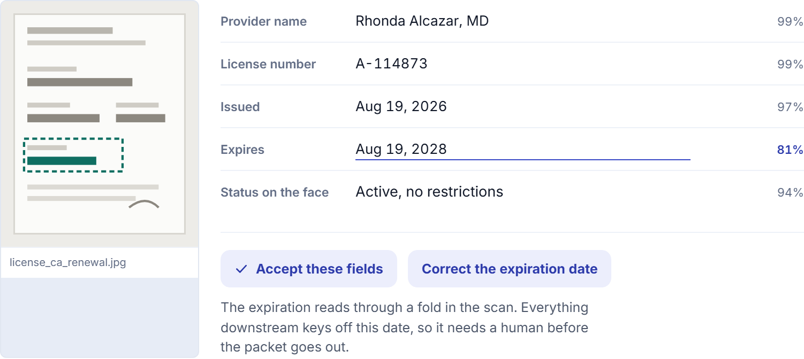
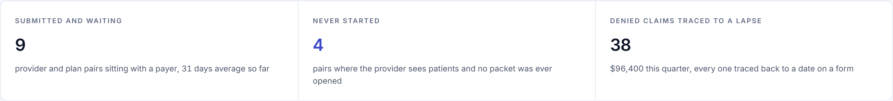

Concept, built to show the software behind a manual role. Not delivered client work.
A lapsed credential stops the billing silently.
Nothing announces a lapsed credential. The claim denies six weeks after the visit, and by then there are six weeks of visits behind it.
The role you would hire for
The role is tracking licenses, registrations, malpractice coverage and board certifications across four sites, assembling packets for commercial plan enrollment and recredentialing, and following up with plans on submission status. It is detail oriented and deadline driven, and a single missed date is expensive.
The manual process that implies
This is a spreadsheet with a tab per plan and a shared drive with a folder per provider. The coordinator watches expiration dates, chases physicians for signatures, assembles a packet, sends it into a plan portal, and then waits thirty to sixty days with no way to see where anything stands. When a claim denies, tracing it back to the date on a form takes an afternoon.
38 claims
denied in one quarter for a provider whose license renewed on time and whose plan never got the new date
A lapsed credential silently stops a provider from billing, and nobody notices until the claim denies. The only useful view is the one that puts every expiring item on a horizon and attaches a dollar figure to each one.
Three screens
Built to be read in a screenshot, then clicked through by whoever it lands with.



Detail
The three places where this stops being a report and starts being a tool.



What it would take to build for real
The concept is a proposal about the shape of the work. This is the honest version of the rest.
What it reads
The credential records that already exist in a spreadsheet, uploaded certificate images, the plan roster responses, and the claim denials that can be traced back to a participation date.
What it writes
A provider record with dated, sourced fields, a packet ready to submit, and a status per provider and plan pair that somebody other than the coordinator can read.
What is genuinely hard
Every plan wants a different packet and answers on a different clock. The grid is easy. Encoding what each plan actually requires, and what each one rejects packets for, is the work.
Shape of the work
Six to eight weeks. Roughly $15,000 to $20,000. The horizon and the grid can be useful in two weeks. The document read and the per plan rules take the rest.
Every engagement is staffed with a dedicated team and a named project lead who works directly with the person who owns the process. The software above was built before anyone paid for anything, which is the point.